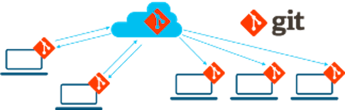

What is Git ?
Git is:
- An open-source, distributed version control system.
- Designed for performance, security, and flexibility.
Git stores snapshots of the full file instead of diffs:
- Changes are stored in trees
- Trees contain changed files
- Commits contain trees
Git vs. GitHub

- Git is the open-source distributed version control system, and has been implemented by different companies.
- GitHub is a commercial company that runs GitHub.com, which is based on Git Version Control System.
Git: Technical Overview
Distributed Version Control

- Opens up to new workflows: git flow
- Each system has an exact replica of the repo as other collaborators